This quantity is known as the distance modulus
For part of this lab, you will need to calculate this distance in order to create a Hubble Diagram. Since logarithms are not particularly intuitive and many of you may not have seen them in a long time (if at all), we are providing this resource to help you calculate this quantity.
Enter magnitudes here:
This first box should be the absolute magnitude, M
This second box should be the appparent magnitude, m
Distance Modulus
We've taken the liberty of rounding this to two decimal places for you.
This units of the distance outputted here are in parsecs